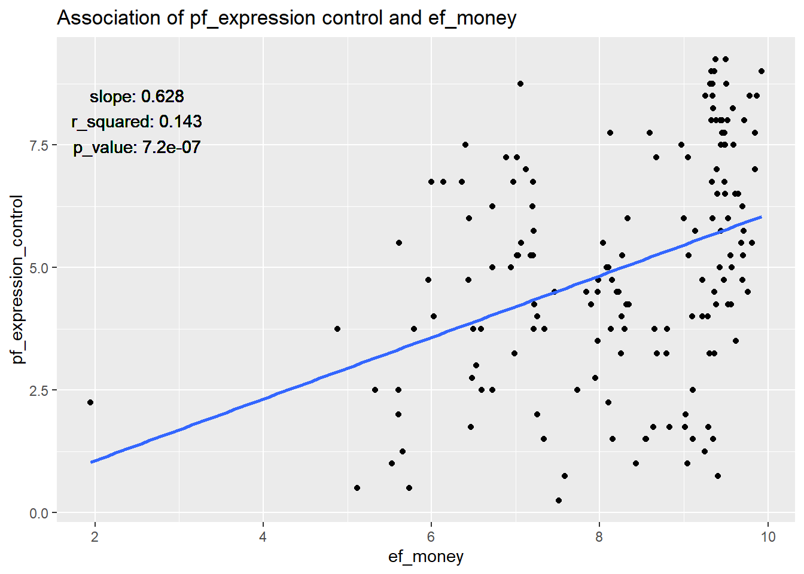

Home
Last updated: 2021-03-02
Checks: 7 0
Knit directory: assignment_Rcourse/
This reproducible R Markdown analysis was created with workflowr (version 1.6.2). The Checks tab describes the reproducibility checks that were applied when the results were created. The Past versions tab lists the development history.
Great! Since the R Markdown file has been committed to the Git repository, you know the exact version of the code that produced these results.
Great job! The global environment was empty. Objects defined in the global environment can affect the analysis in your R Markdown file in unknown ways. For reproduciblity it’s best to always run the code in an empty environment.
The command set.seed(20210301) was run prior to running the code in the R Markdown file. Setting a seed ensures that any results that rely on randomness, e.g. subsampling or permutations, are reproducible.
Great job! Recording the operating system, R version, and package versions is critical for reproducibility.
Nice! There were no cached chunks for this analysis, so you can be confident that you successfully produced the results during this run.
Great job! Using relative paths to the files within your workflowr project makes it easier to run your code on other machines.
Great! You are using Git for version control. Tracking code development and connecting the code version to the results is critical for reproducibility.
The results in this page were generated with repository version eff4cfa. See the Past versions tab to see a history of the changes made to the R Markdown and HTML files.
Note that you need to be careful to ensure that all relevant files for the analysis have been committed to Git prior to generating the results (you can use wflow_publish or wflow_git_commit). workflowr only checks the R Markdown file, but you know if there are other scripts or data files that it depends on. Below is the status of the Git repository when the results were generated:
Ignored files:
Ignored: analysis/site_libs/
Note that any generated files, e.g. HTML, png, CSS, etc., are not included in this status report because it is ok for generated content to have uncommitted changes.
These are the previous versions of the repository in which changes were made to the R Markdown (analysis/index.Rmd) and HTML (docs/index.html) files. If you’ve configured a remote Git repository (see ?wflow_git_remote), click on the hyperlinks in the table below to view the files as they were in that past version.
| File | Version | Author | Date | Message |
|---|---|---|---|---|
| Rmd | eff4cfa | marcorheini | 2021-03-02 | workflowr::wflow_publish(files = “analysis/index.Rmd”) |
| html | aba5d98 | marcorheini | 2021-03-02 | Build site. |
| Rmd | 9b94bd5 | marcorheini | 2021-03-02 | workflowr::wflow_publish(files = “analysis/index.Rmd”) |
| html | b09e9ac | marcorheini | 2021-03-02 | Build site. |
| Rmd | 0bc7a46 | marcorheini | 2021-03-02 | workflowr::wflow_publish(files = “analysis/index.Rmd”) |
| html | 3b78c0f | marcorheini | 2021-03-01 | Build site. |
| Rmd | acc0542 | marcorheini | 2021-03-01 | workflowr::wflow_publish(files = “analysis/index.Rmd”) |
| html | 707a8c3 | marcorheini | 2021-03-01 | Build site. |
| Rmd | 8cc5fc4 | marcorheini | 2021-03-01 | ‘test’ |
| html | 8cc5fc4 | marcorheini | 2021-03-01 | ‘test’ |
| Rmd | 3609b13 | marcorheini | 2021-03-01 | Start workflowr project. |
Welcome to my research website.
Preparation
library(openintro)
library(tidyverse)Assignment
7. Use the hfi dataset from the openintro package
data(hfi)
# we will use only the data from 2016 to avoid problems
hfi_2016 <- hfi %>% filter(year=='2016')8. Fit a new model that uses pf_expression_control to predict hf_score, or the total human freedom score.
# fit the model
Q8 <- lm(hf_score~pf_expression_control, data=hfi_2016)9. Again add region to the model from Q4. Compare the slope and \(R^2\) with the model from Q4.
# define a function that views the most important information
view_param <- function(models){
sapply(models, function(x){
c(x$coefficients[2] %>% round(3), # slope
summary(x)$r.squared %>% round(3), # r_squared
summary(x)$coefficients[2,4] %>% formatC(digits = 2) # p-value
) %>%
set_names(nm=c('slope', 'r_squared', 'p_value'))
}) %>%
as.data.frame() %>%
set_names(nm=paste0('m', c(1:length(models))))
}
# the model from Q4 was to predict the total score by using the variable ef_money
Q4 <- lm(hf_score~ef_money, data=hfi_2016)
# fit the new models containing the region as exposure
Q9 <- lm(hf_score~ef_money + region, data=hfi_2016)
#view most important information
view_param(list(Q4, Q9)) m1 m2
slope 0.504 0.364
r_squared 0.425 0.744
p_value 5.5e-21 1.3e-18The slope decreased for the model that includes the “region” while the \(R^2\) value increased
10. Finally fit a model with ef_money and pf_expression_control as exposures and hf_score as outcome. Compare the slope and \(R^2\) from the models from Q1. Could ef_money be a confounder?
# fit the model
Q10 <- lm(hf_score~ef_money + pf_expression_control, data=hfi_2016)
#view most important information
view_param(list(Q8, Q10)) m1 m2
slope 0.368 0.318
r_squared 0.629 0.774
p_value 2.7e-36 7.7e-19Since we can see that the \(R^2\) value increases when both variables are included, but this increase is not very strong, we can assume that the addition of ef_money does not explain much more variance, and thus it might be the case that ef_money is a confounder of pf_expression_control.
11. Use a linear regression model (and scatter plot) with ef_money as exposure and pf_expression_control as outcome, to study whether ef_money has an association with pf_expression_control as well. This might validate our finding that ef_money is a confounder between pf_expression_control as exposure and
hf_score as outcome from Q6.
# fit the model
Q11 <- lm(pf_expression_control~ef_money, data=hfi_2016)
# plot the results
ggplot(hfi_2016, aes(x=ef_money,
y=pf_expression_control))+
geom_point()+
geom_smooth(method='lm', se=F)+
ggtitle(label = 'Association of pf_expression control and ef_money')+
geom_text(inherit.aes=FALSE,
x=2.5,
y=8,
label=paste(rownames(view_param(list(Q11))),
view_param(list(Q11))[[1]],
sep=': ')%>% paste(., collapse = '\n'))`geom_smooth()` using formula 'y ~ x'
The slope indicates a positive correlation between the two variables. This correlation is highly significant according to the resulting p-value. Thus, the null hypothesis, which states that there is no relationship between the two variables, can be rejected. What means that the variables ef_money and pf_expression_control are most likely confounders and should not be used together for the prediction of the total human freedom score.

sessionInfo()R version 4.0.3 (2020-10-10)
Platform: x86_64-w64-mingw32/x64 (64-bit)
Running under: Windows 10 x64 (build 19041)
Matrix products: default
locale:
[1] LC_COLLATE=German_Germany.1252 LC_CTYPE=German_Germany.1252
[3] LC_MONETARY=German_Germany.1252 LC_NUMERIC=C
[5] LC_TIME=German_Germany.1252
attached base packages:
[1] stats graphics grDevices utils datasets methods base
other attached packages:
[1] forcats_0.5.0 stringr_1.4.0 dplyr_1.0.2
[4] purrr_0.3.4 readr_1.4.0 tidyr_1.1.2
[7] tibble_3.0.4 ggplot2_3.3.3 tidyverse_1.3.0
[10] openintro_2.0.0 usdata_0.1.0 cherryblossom_0.1.0
[13] airports_0.1.0 workflowr_1.6.2
loaded via a namespace (and not attached):
[1] Rcpp_1.0.5 lattice_0.20-41 lubridate_1.7.9.2 ps_1.5.0
[5] assertthat_0.2.1 rprojroot_2.0.2 digest_0.6.27 R6_2.5.0
[9] cellranger_1.1.0 backports_1.2.0 reprex_0.3.0 evaluate_0.14
[13] httr_1.4.2 pillar_1.4.7 rlang_0.4.9 readxl_1.3.1
[17] rstudioapi_0.13 whisker_0.4 Matrix_1.2-18 rmarkdown_2.6
[21] labeling_0.4.2 splines_4.0.3 munsell_0.5.0 broom_0.7.3
[25] compiler_4.0.3 httpuv_1.5.5 modelr_0.1.8 xfun_0.19
[29] pkgconfig_2.0.3 mgcv_1.8-33 htmltools_0.5.0 tidyselect_1.1.0
[33] fansi_0.4.1 crayon_1.3.4 dbplyr_2.0.0 withr_2.3.0
[37] later_1.1.0.1 grid_4.0.3 nlme_3.1-151 jsonlite_1.7.2
[41] gtable_0.3.0 lifecycle_0.2.0 DBI_1.1.0 git2r_0.28.0
[45] magrittr_2.0.1 scales_1.1.1 cli_2.2.0 stringi_1.5.3
[49] farver_2.0.3 fs_1.5.0 promises_1.2.0.1 xml2_1.3.2
[53] ellipsis_0.3.1 generics_0.1.0 vctrs_0.3.6 tools_4.0.3
[57] glue_1.4.2 hms_0.5.3 yaml_2.2.1 colorspace_2.0-0
[61] rvest_0.3.6 knitr_1.30 haven_2.3.1